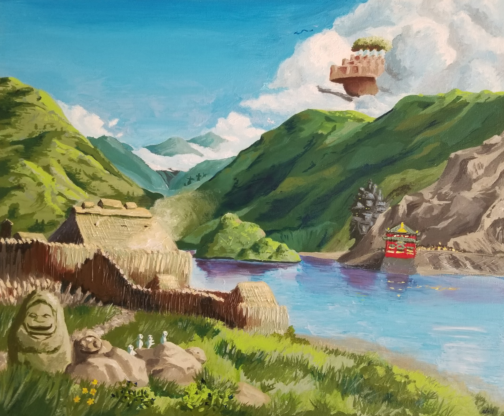
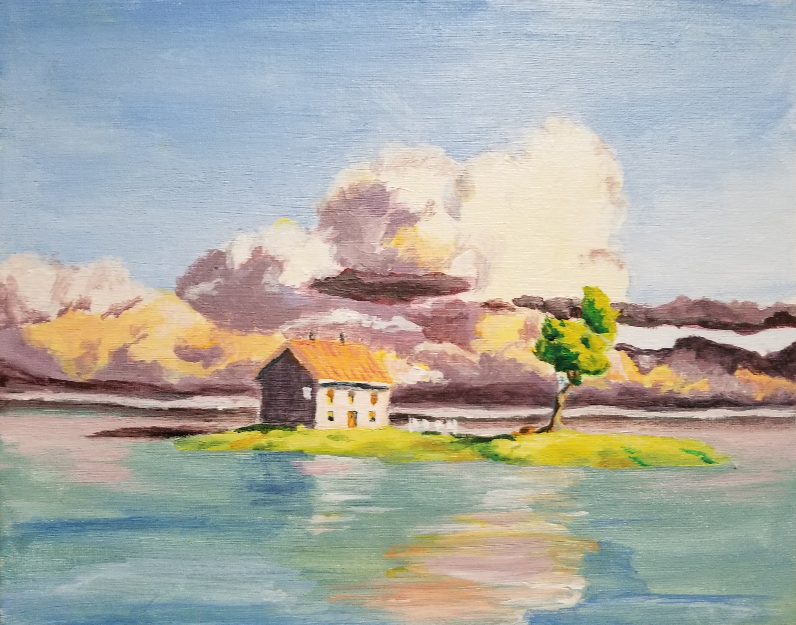
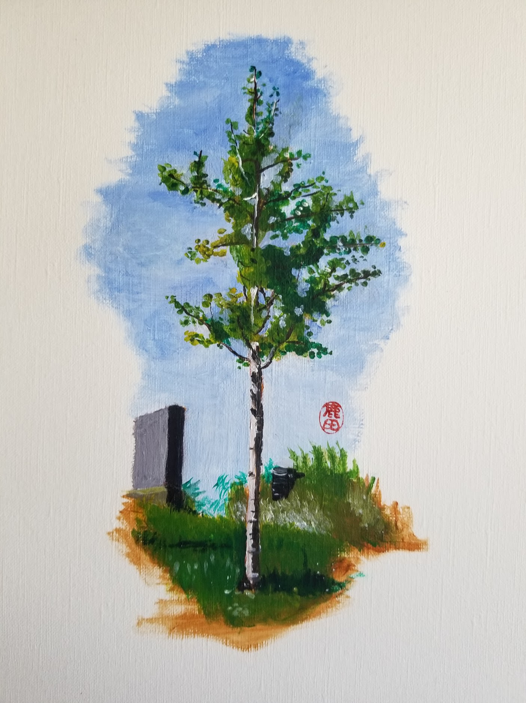
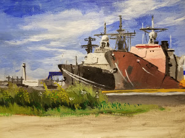
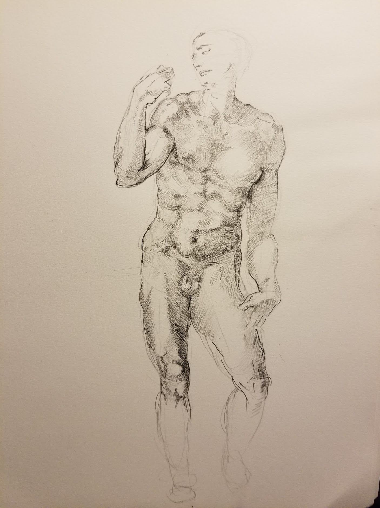

Pandemic Paintings
A collection of paintings made during the pandemic.
1 / 9

dam as the horizon
2 / 9

incremental sunken approach
3 / 9

floating walkway - space for scattering
4 / 9
infinite funerary edge - location of headstones
5 / 9

space of individual remembrance
6 / 9
study of japanese gravestones
7 / 9

section through remembrance space and crematorium
8 / 9
section through the crematorium to the dam
9 / 9

site plan